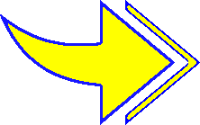

Cet atout permet au joueur de casser un mur qui le gêne pour progresser.
L'atout à un " cooldown " de 6 tours, c'est-à-dire que le joueur devra attendre 6 tours avant de pouvoir briser un autre mur.
Briser un mur s'effectue sur les cases adjacentes au personnage.
Cet atout est bénéfique pour le joueur si un bloc l’empêche dans sa progression, le joueur a donc la capacité, grâce à cet atout, de pousser d'une case un mur adjacent.
Cependant, il est impossible de pousser un mur si un autre mur est derrière le mur visé par l'atout.
Un cooldown de 3 tours est appliqué.
Cet atout fait bénéficier au PAC-MAN de la possibilité d'avancer de deux cases en un tour au lieu d'une seule.
Un cooldown de 5 tours s'applique sur l'atout.
Cet atout peut être utilisé deux fois maximum par tour.
Il permet de réduire d'un le cooldown de chaque sort simultanément. En contrepartie, le sort ajoute un tour supplémentaire.
Utiliser le donc à bon escient, car votre score diminue à chacune de ses utilisations.
Page précédente
Page suivante